UX & pesquisa
- Pesquisa com foco no usuário
- Design centrado no usuário
- Fluxos e organização de interfaces
UX/UI Design · Nova Hartz, RS
Estudante de Sistemas de Informação com base técnica em tecnologia e experiência prática em pesquisa de UX, prototipação no Figma e design digital.
Sobre
Sou estudante de Sistemas de Informação na FACCAT e busco ingressar na área de UX/UI Design, unindo minha base técnica — Python, HTML, CSS e suporte de hardware — à prática de prototipação e design digital.
Atualmente atuo na Prefeitura de Nova Hartz, onde desenvolvo wireframes e protótipos no Figma para sistemas e sites institucionais, além de oferecer suporte técnico. Também crio identidades visuais e conteúdo para redes sociais como freelancer.
Quero evoluir continuamente na criação de experiências intuitivas e eficientes, com soluções centradas no usuário e impacto real no produto.
Projetos
Da pesquisa e prototipação de interfaces à construção de marcas. Cada projeto completo está no Behance.
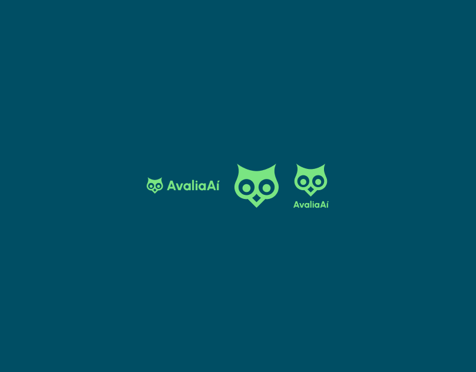
App de avaliação de trabalho acadêmico
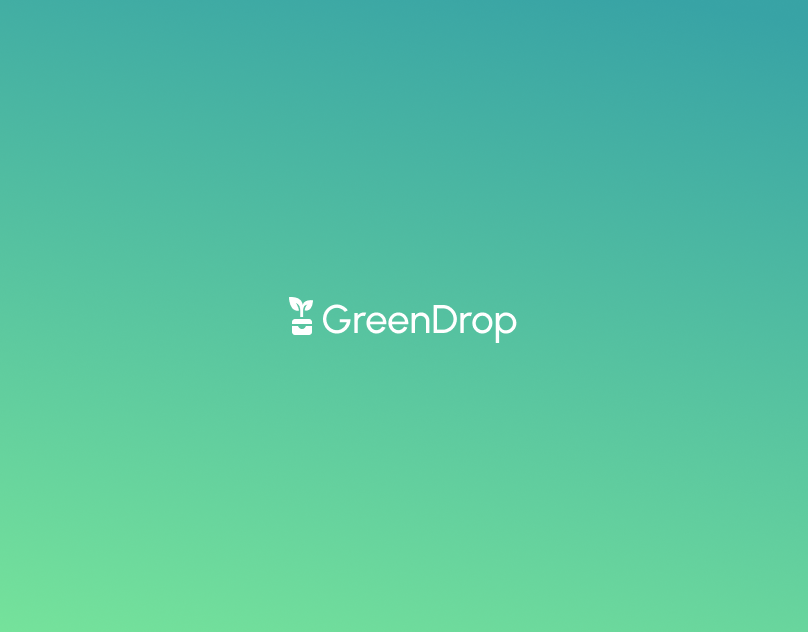
App de coleta de lixo eletrônico
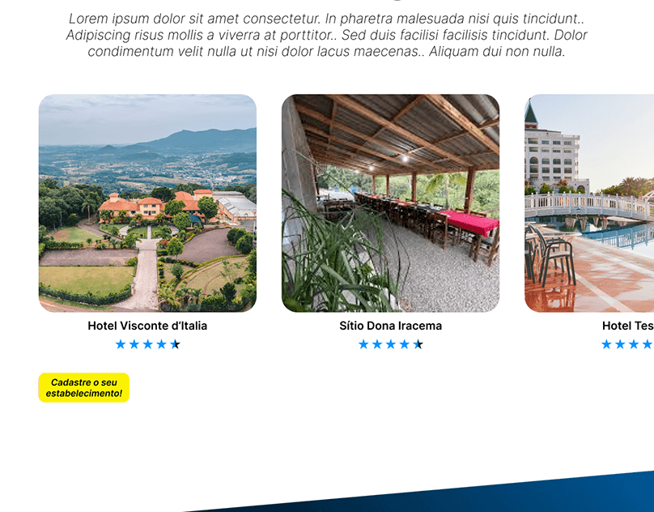
Site de turismo municipal
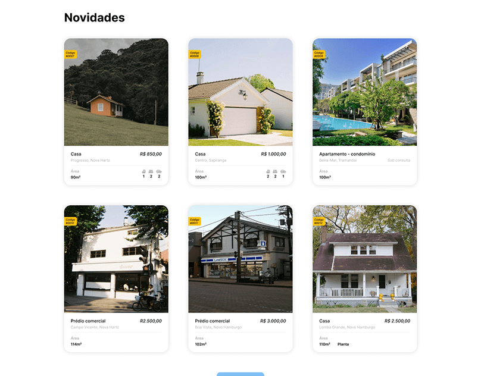
Design de site institucional
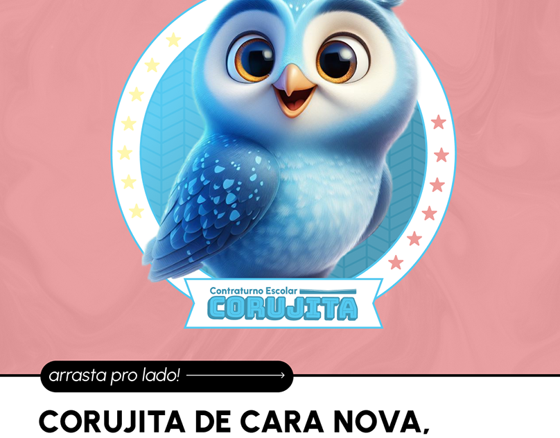
Branding de contraturno escolar
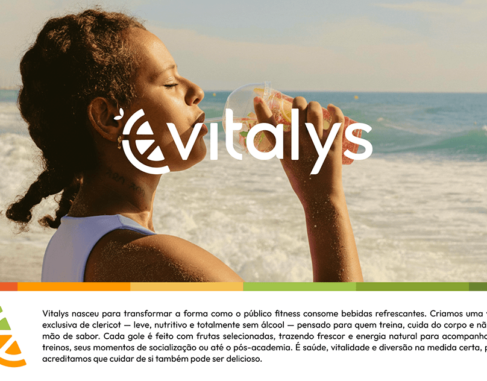
Marca de bebidas naturais (Clericot)
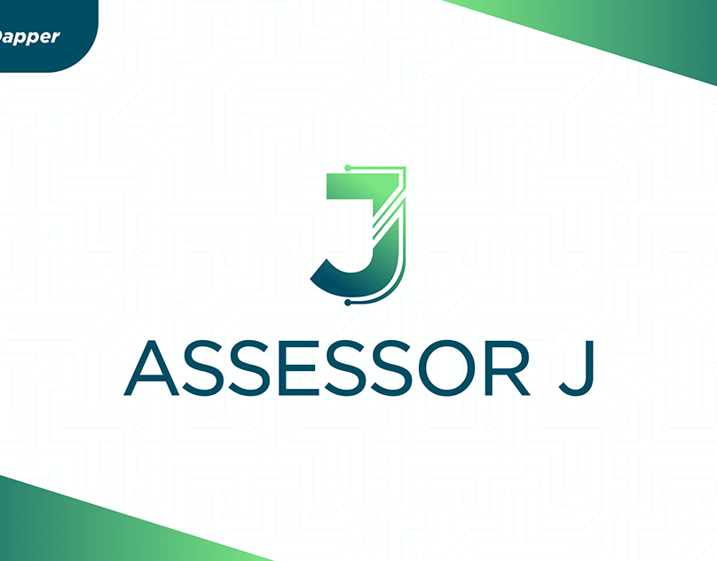
Identidade visual para T.I.
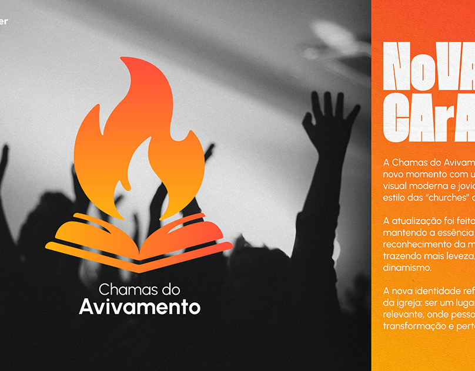
Identidade visual para igreja
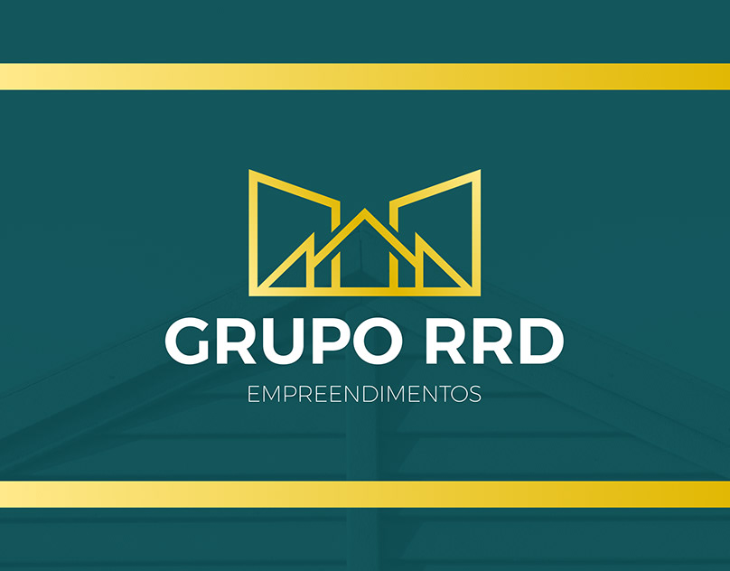
Identidade visual de empreendimento imobiliário
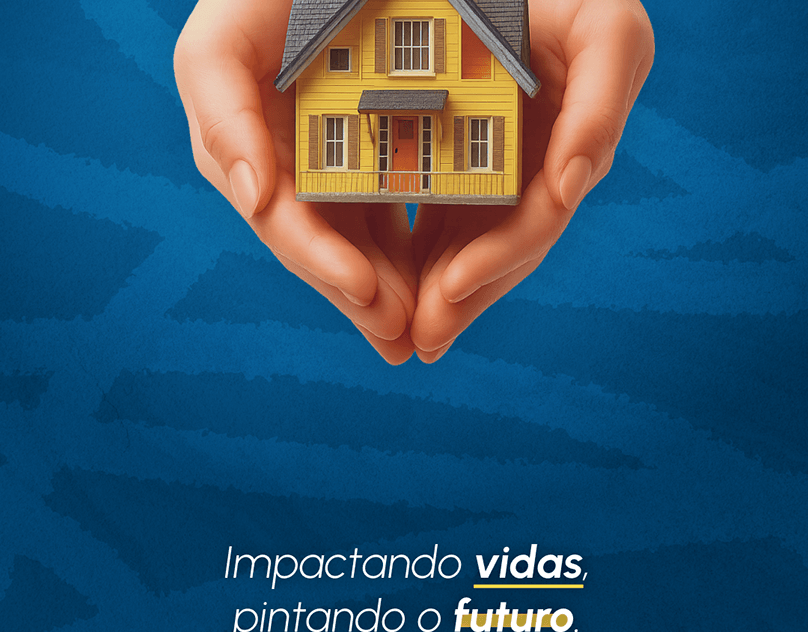
Design para redes sociais
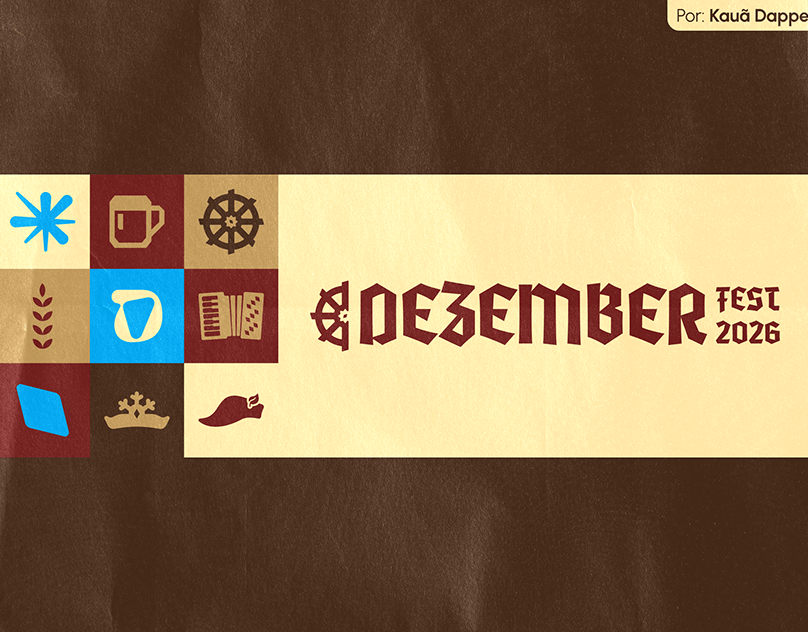
Festival germânico
Diagramação de e-book
Projeto acadêmico
Nosso objetivo é conscientizar as pessoas sobre a identificação e classificação de dark patterns em interfaces de serviços digitais: manipulação do usuário e implicações jurídicas.
Trabalho de Sistemas de Informação na FACCAT, desenvolvido com Caio Arruda e Igor Oliveira Fiorio, sob orientação do Prof. Dr. Luís Antônio Licks Missel Machado.
Experiência
Prefeitura de Nova Hartz
Desenvolvimento de wireframes e protótipos no Figma para sistemas e sites institucionais. Suporte técnico a usuários e à infraestrutura municipal. Participação na melhoria de interfaces e na organização de fluxos digitais.
Casa Magalhães (Grupo Boticário)
Suporte ao cliente com foco em resolução de problemas técnicos e operacionais. Apoio a sistemas de PDV e equipamentos. Assistência com informações tributárias básicas.
Freelancer
Criação de identidade visual e conteúdo digital. Desenvolvimento de artes para redes sociais. Planejamento de comunicação visual para marcas.
Habilidades
10h
10h
120h
180h
180h
Formação
FACCAT · 03/2023 — Atualmente
Cursos focados na história do design e design centrado no usuário.
Código
Galeria virtual educativa que conscientiza sobre dark patterns — padrões de design que exploram vieses cognitivos para manipular usuários.
Coleção de trabalhos e projetos da faculdade.